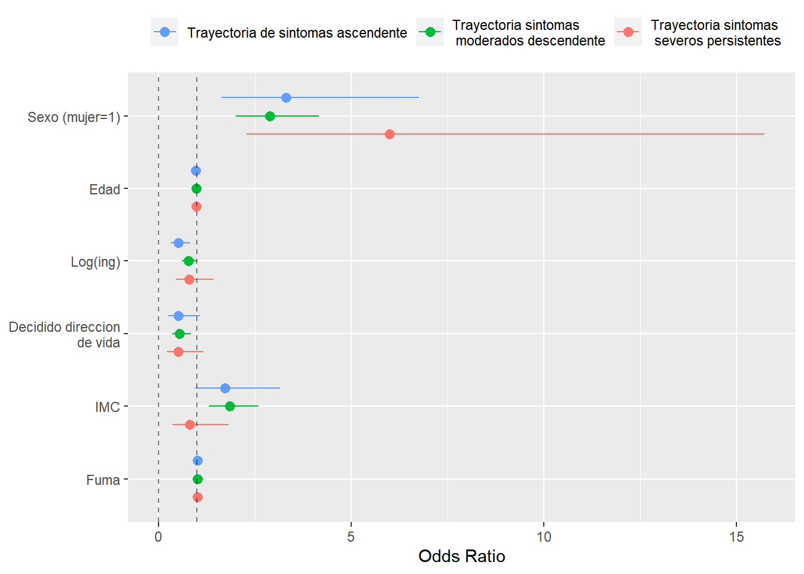

Capítulo 4 Modelo multinomial logit
# load('datos_salud_modelo.RData')4.1 Comparación trayectorias
with(elsoc_salud_modelo, rcompanion::cramerV(trayectoria_gmm.4lin, trayectoria_gmm.5lin, bias.correct = TRUE))## Cramer V
## 0.83034.2 Variable dependiente: Trayectorias LCMM 4 clases - sin trayectoria salud subjetiva
m1 <- elsoc_salud_modelo %>%
multinom(trayectoria_gmm.4lin ~ m0_sexo_w01 + m0_edad_w01 + log_ing + trayectoria_deuda + trayectoria_apoyo_social + trayectoria_ocup,
data = ., weights = ponderador02_w01, quiet = TRUE) ## # weights: 68 (48 variable)
## initial value 1734.839267
## iter 10 value 1230.496745
## iter 20 value 1049.261665
## iter 30 value 971.652390
## iter 40 value 969.341352
## final value 969.339477
## convergedm2 <- elsoc_salud_modelo %>%
multinom(trayectoria_gmm.4lin ~ m0_sexo_w01 + m0_edad_w01 + log_ing + trayectoria_deuda + trayectoria_apoyo_social + trayectoria_ocup + fuma_w01 + imc_w01 + proyecto_vida_w03,
data = ., weights = ponderador02_w01, quiet = TRUE) ## # weights: 80 (57 variable)
## initial value 1608.712819
## iter 10 value 1520.391440
## iter 20 value 1029.601126
## iter 30 value 933.763897
## iter 40 value 872.694813
## iter 50 value 871.772222
## iter 60 value 871.720515
## iter 70 value 871.717839
## iter 70 value 871.717833
## iter 70 value 871.717833
## final value 871.717833
## convergedm3 <- elsoc_salud_modelo %>%
multinom(trayectoria_gmm.4lin ~ m0_sexo_w01 + m0_edad_w01 + log_ing + trayectoria_deuda + trayectoria_apoyo_social + trayectoria_ocup + fuma_w01 + imc_w01 + proyecto_vida_w03 + extraversion_w02 + agreeableness_w02 + conscientiousness_w02 + neuroticism_w02 + openness_w02,
data = ., weights = ponderador02_w01, quiet = TRUE) ## # weights: 100 (72 variable)
## initial value 1591.597629
## iter 10 value 1388.652051
## iter 20 value 1063.758303
## iter 30 value 914.155567
## iter 40 value 861.653311
## iter 50 value 804.926837
## iter 60 value 802.664504
## iter 70 value 802.647857
## iter 80 value 802.646595
## final value 802.646519
## convergedmodelsummary::modelsummary(list(m1, m2, m3),
estimate = "{estimate}{stars}",
statistic = NULL,
stars = c('*' = .05, '**' = .01, '***' = .001),
shape = term + response ~ model,
exponentiate = TRUE)| Model 1 | Model 2 | Model 3 | ||
|---|---|---|---|---|
| (Intercept) | Trayectoria sintomas moderados descendente | 2.830 | 1.059 | 1.220 |
| Trayectoria de sintomas ascendente | 0.013 | 0.225 | 3.783 | |
| Trayectoria sintomas severos persistentes | 0.113 | 0.566 | 0.134 | |
| m0_sexo_w01 | Trayectoria sintomas moderados descendente | 2.771*** | 3.187*** | 2.885*** |
| Trayectoria de sintomas ascendente | 4.420*** | 4.233*** | 3.314** | |
| Trayectoria sintomas severos persistentes | 4.400*** | 5.821*** | 6.000*** | |
| m0_edad_w01 | Trayectoria sintomas moderados descendente | 0.975*** | 0.972*** | 0.980*** |
| Trayectoria de sintomas ascendente | 0.974** | 0.974* | 0.970** | |
| Trayectoria sintomas severos persistentes | 0.983 | 0.977* | 0.981 | |
| log_ing | Trayectoria sintomas moderados descendente | 0.719** | 0.786* | 0.779 |
| Trayectoria de sintomas ascendente | 0.889 | 0.708 | 0.511** | |
| Trayectoria sintomas severos persistentes | 0.703 | 0.656 | 0.798 | |
| trayectoria_deudaReduccion sobrecarga deuda | Trayectoria sintomas moderados descendente | 1.239 | 1.388 | 1.317 |
| Trayectoria de sintomas ascendente | 2.034 | 2.762* | 3.527** | |
| Trayectoria sintomas severos persistentes | 1.594 | 1.574 | 2.124 | |
| trayectoria_deudaAumento sobrecarga deuda | Trayectoria sintomas moderados descendente | 0.638* | 0.696 | 0.764 |
| Trayectoria de sintomas ascendente | 1.010 | 1.377 | 1.813 | |
| Trayectoria sintomas severos persistentes | 1.585 | 1.550 | 2.018 | |
| trayectoria_deudaBastante/muy sobrecargados deuda | Trayectoria sintomas moderados descendente | 1.748* | 1.659* | 1.627 |
| Trayectoria de sintomas ascendente | 1.944 | 2.400 | 2.695 | |
| Trayectoria sintomas severos persistentes | 2.939* | 2.439 | 3.283* | |
| trayectoria_apoyo_socialApoyo social/decreciente | Trayectoria sintomas moderados descendente | 3.133** | 3.068** | 2.785** |
| Trayectoria de sintomas ascendente | 3.498 | 3.830 | 3.675 | |
| Trayectoria sintomas severos persistentes | 1.548 | 1.344 | 1.108 | |
| trayectoria_apoyo_socialApoyo social medio | Trayectoria sintomas moderados descendente | 3.116*** | 2.369* | 2.071* |
| Trayectoria de sintomas ascendente | 3.604 | 3.717 | 3.454 | |
| Trayectoria sintomas severos persistentes | 1.913 | 1.955 | 1.099 | |
| trayectoria_apoyo_socialApoyo social cambiante | Trayectoria sintomas moderados descendente | 4.672*** | 4.784*** | 4.033*** |
| Trayectoria de sintomas ascendente | 4.806* | 4.657* | 3.751* | |
| Trayectoria sintomas severos persistentes | 1.919 | 1.447 | 1.022 | |
| trayectoria_apoyo_socialSin apoyo social | Trayectoria sintomas moderados descendente | 5.891*** | 6.031*** | 5.750*** |
| Trayectoria de sintomas ascendente | 6.321* | 5.706* | 5.492* | |
| Trayectoria sintomas severos persistentes | 10.680*** | 8.499** | 8.439** | |
| trayectoria_ocupOscilan entre inactividad y ocupacion | Trayectoria sintomas moderados descendente | 0.553 | 0.547 | 0.509 |
| Trayectoria de sintomas ascendente | 2.479* | 2.636* | 2.208 | |
| Trayectoria sintomas severos persistentes | 4.521** | 4.488** | 4.864* | |
| trayectoria_ocupOcupados con periodos sin ocupacion | Trayectoria sintomas moderados descendente | 0.661 | 0.652 | 0.668 |
| Trayectoria de sintomas ascendente | 1.158 | 0.754 | 0.662 | |
| Trayectoria sintomas severos persistentes | 1.770 | 1.149 | 1.326 | |
| trayectoria_ocupMayoritariamente inactivos | Trayectoria sintomas moderados descendente | 1.752* | 1.708* | 1.335 |
| Trayectoria de sintomas ascendente | 1.069 | 1.118 | 0.524 | |
| Trayectoria sintomas severos persistentes | 1.962 | 1.691 | 1.431 | |
| trayectoria_ocupMayoritariamente trabajo no remunerado | Trayectoria sintomas moderados descendente | 0.712 | 0.728 | 0.622 |
| Trayectoria de sintomas ascendente | 1.402 | 1.311 | 1.095 | |
| Trayectoria sintomas severos persistentes | 2.416 | 2.258 | 1.885 | |
| trayectoria_ocupMayoritariamente desempleados | Trayectoria sintomas moderados descendente | 2.669* | 1.630 | 1.470 |
| Trayectoria de sintomas ascendente | 0.760 | 0.531 | 0.453 | |
| Trayectoria sintomas severos persistentes | 3.943 | 3.236 | 3.240 | |
| fuma_w01Fumador | Trayectoria sintomas moderados descendente | 1.757*** | 1.842*** | |
| Trayectoria de sintomas ascendente | 1.702 | 1.731 | ||
| Trayectoria sintomas severos persistentes | 0.725 | 0.814 | ||
| imc_w01 | Trayectoria sintomas moderados descendente | 1.007 | 1.010 | |
| Trayectoria de sintomas ascendente | 1.006 | 1.009 | ||
| Trayectoria sintomas severos persistentes | 1.007 | 1.009 | ||
| proyecto_vida_w03Decidido direccion de vida | Trayectoria sintomas moderados descendente | 0.484*** | 0.545** | |
| Trayectoria de sintomas ascendente | 0.516 | 0.515 | ||
| Trayectoria sintomas severos persistentes | 0.372* | 0.511 | ||
| extraversion_w02 | Trayectoria sintomas moderados descendente | 0.957 | ||
| Trayectoria de sintomas ascendente | 1.009 | |||
| Trayectoria sintomas severos persistentes | 0.680** | |||
| agreeableness_w02 | Trayectoria sintomas moderados descendente | 0.836** | ||
| Trayectoria de sintomas ascendente | 0.925 | |||
| Trayectoria sintomas severos persistentes | 0.812 | |||
| conscientiousness_w02 | Trayectoria sintomas moderados descendente | 0.854** | ||
| Trayectoria de sintomas ascendente | 0.975 | |||
| Trayectoria sintomas severos persistentes | 0.824 | |||
| neuroticism_w02 | Trayectoria sintomas moderados descendente | 1.370*** | ||
| Trayectoria de sintomas ascendente | 1.257* | |||
| Trayectoria sintomas severos persistentes | 1.793*** | |||
| openness_w02 | Trayectoria sintomas moderados descendente | 1.120* | ||
| Trayectoria de sintomas ascendente | 1.140 | |||
| Trayectoria sintomas severos persistentes | 1.047 | |||
| Num.Obs. | 1232 | 1144 | 1130 | |
| AIC | 2034.7 | 1857.4 | 1749.3 | |
| BIC | 2280.3 | 2144.8 | 2111.5 | |
| RMSE | 0.34 | 0.33 | 0.33 |
4.3 Resultados en formato grafico
coefs <- broom::tidy(m3, conf.int=TRUE)
coefs %>%
filter(grepl('trayectoria_deuda', term)) %>%
mutate(estimate = exp(estimate),
conf.low = exp(conf.low),
conf.high = exp(conf.high)) %>%
ggplot(aes(x = estimate, y = term, colour = fct_rev(y.level))) +
geom_pointrangeh(aes(xmin = conf.low, xmax = conf.high),
position = position_dodgev(height = 0.75)) +
geom_vline(xintercept = 1, linetype = 2, alpha = .5) +
theme(legend.position = 'top') +
theme(legend.title = element_blank()) +
xlab('Odds Ratio')
mfx <- marginaleffects(m3, type = "probs")
asd <- summary(mfx)
asd %>%
ggplot(aes(x = estimate, y = term, colour = fct_rev(group))) +
geom_pointrangeh(aes(xmin = conf.low, xmax = conf.high),
position = position_dodgev(height = 0.75)) +
theme(legend.position = 'top') +
theme(legend.title = element_blank()) +
xlab('Odds Ratio')
Trayectorias según clasificación
elsoc_salud_long %>%
left_join(elsoc_salud_modelo %>% select(idencuesta, trayectoria_gmm.4lin), by = 'idencuesta') %>%
filter(!is.na(trayectoria_gmm.4lin)) %>%
group_by(trayectoria_gmm.4lin) %>%
sjlabelled::as_label(ola) %>%
ggplot(aes(y = phq9, x = ola, group = idencuesta, color = trayectoria_gmm.4lin)) +
facet_wrap(~trayectoria_gmm.4lin) +
geom_line(alpha = .25) +
geom_point(alpha = .25) +
geom_hline(yintercept = 10, linetype = 2) +
scale_y_continuous(limits = c(0, 27)) +
theme(legend.position = 'none') +
ylab('Indice PHQ-9') +
xlab(NULL)